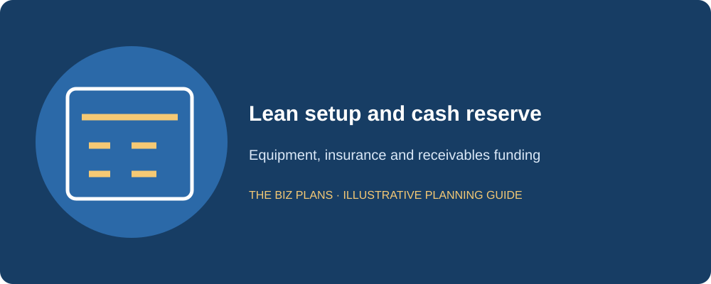
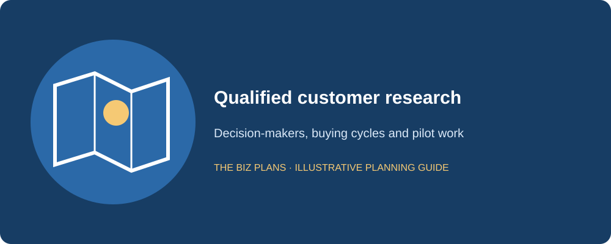
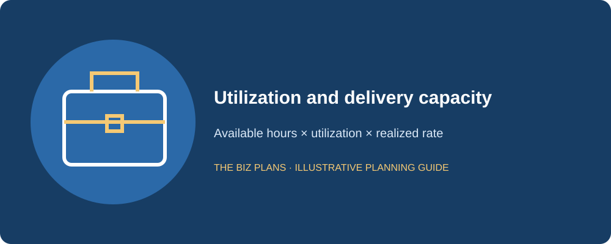
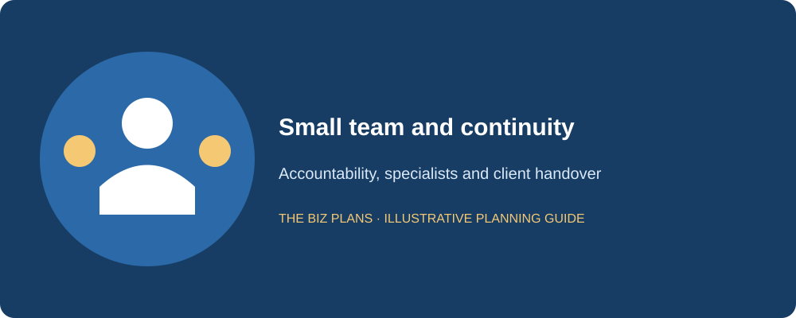
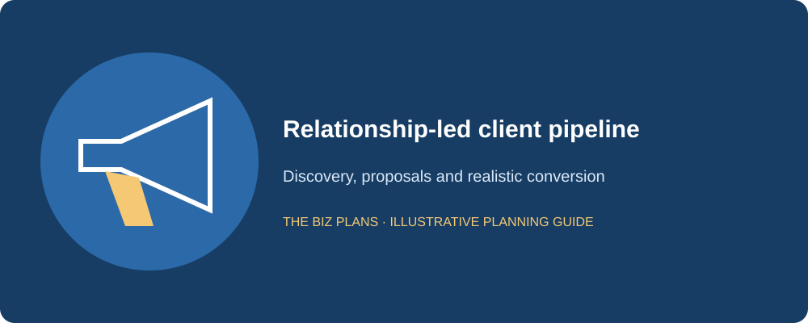

This consulting business plan sample follows Clarity Point Advisors, a fictional Toronto boutique management consulting firm serving mid-market companies on operations improvement and financial planning. The fictional founder has 15 years of corporate-finance experience. Each sample section is followed by an italic practitioner note explaining what a lender or investor needs to verify. The firm is an example, not a claim about an existing consulting practice or a promise of achievable revenue.
Use this management consulting business plan sample to translate professional expertise into a model for winning and delivering work. The difficult questions are practical: how much time can actually be billed, which opportunities can close, what happens if a project pauses, and how long the firm waits to collect. The guide includes a startup budget, three linked financial statements, a funding request and a consulting firm business plan template checklist. It separates the founder’s compensation from profit and shows why a firm with few physical assets can still require substantial working capital.
All company details and financial figures in this sample are illustrative examples showing plan structure — not market data, and not forecasts for any real business.
How to use this sample
- Read the annotations to understand what a lender or investor checks in each section.
- Swap in your actual quotations, customer research and operating assumptions; recalculate the linked statements.
- Do not submit a fictional sample to a lender. Use business plan writing services to develop an application based on your business.
Start with your available delivery hours and a qualified opportunity register. Professional experience is valuable, but it is not contracted revenue. Record the decision-maker, need, budget, expected start date and next action for each prospect. Build a monthly forecast that distinguishes signed work from a probability-weighted pipeline and capacity that remains unsold.
How much does it cost to start a consulting firm?
Clarity Point’s illustrative setup range is $18,000–$35,000, with an illustrative $30,000 base budget. This is a lean Toronto scenario, not a national benchmark. Office commitments, specialist software and required insurance can change the cost. The founder’s ability to cover household spending during an uncertain sales cycle is often more consequential than the price of a laptop.
| Use of funds | Illustrative amount |
|---|---|
| Incorporation and legal documents | $3,000 (illustrative) |
| Professional liability insurance allowance | $2,000 (illustrative) |
| Website and brand | $4,000 (illustrative) |
| Laptop and equipment | $3,000 (illustrative) |
| Software and CRM setup | $2,000 (illustrative) |
| Initial marketing and network development | $4,000 (illustrative) |
| Cash reserve supporting three months of founder compensation | $12,000 (illustrative) |
| Total setup budget | $30,000 (illustrative) |
The illustrative $12,000 reserve is business cash earmarked for a three-month minimum founder-compensation bridge, not an opening-day personal expense charged twice. The founder’s full illustrative Year 1 salary is $72,000 in the operating model. A real household budget must establish whether the reserve and other personal savings are sufficient; the founder cannot simply assume clients pay immediately.
The total proposed funding capacity is illustratively $65,000: $40,000 operating line and $25,000 owner equity. The difference between that capacity and the illustrative $30,000 setup budget is an additional $35,000 receivables and contingency buffer. This funding request does not claim that the firm needs $65,000 of incorporation or equipment spending. Line availability and the timing of draws must be confirmed with the lender.

The reviewer looks for the founder’s sustainable income bridge and a distinction between setup costs, cash reserves and undrawn borrowing capacity.
How do consultants make money?
Consultants can charge for hours, defined projects or recurring advisory capacity. An hourly contract converts approved time into invoices; a fixed project transfers more scope risk to the consultant; a retainer creates recurring obligations even when demand varies. Clarity Point will price each engagement against the delivery time and specialist costs required, then test how long the resulting receivable remains unpaid.
The correct utilization formula is available working hours × billable utilization × realized hourly rate. Multiplying already-billable hours by utilization again would understate revenue. Our illustrative founder capacity is 1,800 hours annually, with illustrative Year 1 utilization of 50% and a $200 realized rate: $180,000 founder-led revenue. An additional illustrative $40,000 specialist-led stream brings the total to $220,000. Sales, administration, training and holidays consume the hours that are not billed.
For an illustrative Year 3 capacity check, the founder’s 1,800 available hours at 65% utilization and a $200 realized rate support $234,000. An associate with 1,800 available hours at 60% and the same rate supports $216,000. A separate $30,000 bounded specialist-project stream completes the $480,000 target. The direct-delivery budget must cover that specialist capacity; these streams cannot be added to another forecast that already includes their hours. These are assumptions to verify, not promised utilization.
The illustrative target revenue mix is 40% retainers and 60% projects in Year 1. Retainers are scoped services, not a promise of unlimited access. Direct subcontractor delivery costs of $55,000 leave an illustrative 75% gross margin before founder compensation and overhead. Calling this a high-margin business does not establish net profitability; founder pay, insurance, acquisition work and idle time remain real costs.
Sample executive summary
Clarity Point Advisors will be a Toronto-based boutique management consulting firm helping mid-market companies improve operating performance and financial planning. I founded the concept after 15 years managing corporate-finance analysis, budgeting and cross-functional improvement work. Our initial services will be focused diagnostics, implementation support and recurring management reporting. We will sell defined outcomes and decision support rather than a broad promise to solve every business problem.
Our first clients will be companies whose leadership teams need additional analytical capacity and a practical operating plan. We will build opportunities through existing relationships, professional referral partners and useful case-based content. Each engagement will have an agreed scope, delivery milestones, client responsibilities and payment terms. A qualified subcontractor will provide specialist capacity under confidentiality and quality controls, while I remain accountable for the work.
The illustrative revenue forecast is $220,000 in Year 1, rising to $480,000 in Year 3 as a small team expands delivery capacity. The funding example combines an illustrative $40,000 operating line with $25,000 owner equity to cover setup and the gap between delivery and corporate payment. We will track utilization, signed backlog, proposal conversion and overdue receivables monthly. Retainers will support a steadier workload, while projects provide growth within documented capacity. If the founder becomes unavailable, an approved associate will continue essential client work using shared methods and handover records.
From a corporate-finance perspective, expertise becomes bankable only when scope, capacity, signed demand and cash collection can be tested. Clarity Point is fictional and is not Atul Jagga’s practice.
Sample market analysis
Our fictional target is a Toronto-area mid-market company with a finance or operations leader who needs practical analysis but cannot justify a permanent specialist for every project. We hypothesize that these clients value clear deliverables, a senior operator and implementation support. The plan must test that proposition against internal staff, other consultants, software providers and the choice to defer the work.
I will interview prospective decision-makers and referral partners about current problems, procurement requirements, approval thresholds and buying cycles. The research log will separate a general expression of interest from a defined problem with budget and an accountable buyer. Competitor reviews will compare positioning, engagement types and publicly available service information without inventing revenue or market share. Any real statistics added later require named, dated primary sources.
A pilot diagnostic will be offered under a written scope and a commercial price. Feedback will test whether recommendations are usable and whether a follow-on engagement is justified. Client permission is required before publishing any case study, and identifying details can be removed without implying a fictional client is real. This sample does not claim a measured market size, growth rate or guaranteed pool of prospects.

Lenders read for a buyer with a budget and a reason to act, not an abstract claim that every company needs consulting.
Turn your expertise into a financeable plan
Build the capacity, pipeline and cash forecast around your real practice.
Explore business plan servicesWhat makes a consulting firm plan different?
Utilization controls the model. The illustrative monthly ramp begins at 40% and reaches 65% by month 18; the illustrative Year 1 average is 50%. These are planning assumptions, not industry averages. At 40%, the illustrative 1,800-hour founder capacity and $200 realized rate produce $144,000, before any separate specialist-led work. A sales forecast cannot exceed hours that the team can deliver without explicitly adding capacity.
Pipeline needs a shape. Our illustrative opening register contains 20 warm contacts, eight discovery discussions, four qualified proposals and one expected initial win. That is an illustrative 25% conversion from proposal to win, not evidence that it will happen. The real appendix will redact client names where needed while preserving values, expected dates, stages and the supporting basis. Signed work, letters of intent and unqualified contacts remain distinct.
Key-person risk needs a 90-day response. If I am unavailable for an illustrative 90 days, an approved associate will continue contracted deliverables under client-approved terms. The cash downside case assumes new founder-led selling pauses. Methods, models, files and status notes will be documented, but contracts and professional liability coverage must support the handover; documentation alone cannot transfer client consent.
Retainers and projects carry different concentration risk. The illustrative 40% retainer mix helps planning only when agreements are enforceable and scope is controlled. Measure exposure to the largest client, cancellation periods and renewal dates. A recurring invoice that can stop next month is different from multi-month committed backlog.

Sample company description
Clarity Point will operate through a fictional Ontario corporation owned by the founder. Engagements will use written scopes, confidentiality terms, payment milestones and appropriate professional liability coverage. We will not offer regulated services outside the qualifications held by the actual team. The legal and insurance review will address data access, liability caps and the ability to use subcontractors.
We will maintain separate business banking, bookkeeping and approval records. The sample assumes taxable revenues will exceed the CRA’s $30,000 small-supplier threshold. The registration date depends on how and when the threshold is exceeded, with associated businesses considered where applicable; consult the CRA’s GST/HST registration guidance. Collections of HST are not sales revenue. The real cash forecast must distinguish remittances, recoverable input tax credits and any taxes that remain a cost.
We will check applicable Ontario employment and WSIB obligations before engaging staff, rather than assume that every worker is an independent contractor. An accountant will review payroll and tax setup, while qualified advisers review the contracts and insurance relevant to our activities. Each compliance task will have an owner, a due date and supporting evidence. The fictional company described here is separate from The Biz Plans and from the real author’s practice.
The lender wants a clearly identified borrower and contracts that allocate delivery, payment and professional-liability risk credibly.
Sample organization and management
I will lead business development, client diagnosis and final quality review. A specialist subcontractor will provide modelling or process expertise on approved engagements. Bookkeeping and administrative support will manage billing records and scheduling. The real plan will include résumés, references and work samples that the founder has permission to share. Past employer experience must not be presented as contracts belonging to the new firm.
The illustrative founder salary is $72,000 in Year 1, with later increases tied to collected revenue and team capacity. Direct subcontractor expense is separated from that salary, so the gross-margin calculation does not hide the cost of specialist delivery. We will add team members only after showing the workload they can serve and the cash needed before clients pay.
For continuity, each engagement will have a delivery file with scope, source data, key decisions, model assumptions and next milestones. The alternate associate will review active work regularly, subject to confidentiality and client approval. This is more dependable than asking an unfamiliar contractor to rescue a complex project after an emergency.

Lenders assess the people delivering the contract and the revenue lost during a founder absence, not just the credentials on a résumé.
Sample services and pricing
Our entry offer will be a bounded operations and financial diagnostic. It will map the current process, identify data gaps and prioritize improvements with the client’s management team. Follow-on projects may include budget design, management reporting or implementation support. A retainer will cover an agreed reporting and advisory cadence, with clear limits and separately approved additional work.
For a fixed-price project, we will estimate required senior and specialist hours, add a risk allowance and define change control. A scope change must alter price, timing or capacity rather than become invisible unpaid work. Hourly engagements will use approved timesheets and a documented realized-rate calculation after discounts. Retainer economics will be reviewed against actual effort, not the amount invoiced alone.
Deliverables will be defined so the client can accept them without a subjective dispute about whether improvement has occurred. We will agree data responsibilities, review points and limits on implementation authority. Payment milestones will follow useful deliverables, and overdue accounts will trigger a defined escalation before more work is performed.
A lender looks for priced, bounded work and a collection mechanism; impressive service names do not establish a realizable margin.
How do consultants get clients?
Clarity Point will begin with a warm professional network, referral partners and narrowly focused content. We will ask for a discovery discussion around a specific problem rather than send generic service pitches. Referral arrangements will be transparent and compatible with any professional obligations. Content will explain methods and decisions without disclosing confidential client or former-employer information.
The illustrative Year 1 recurring marketing budget is $15,000, separate from the illustrative $4,000 pre-launch network-development allowance. We will measure discovery conversations, qualified proposals, wins and the elapsed time between stages. The founder’s selling hours remain non-billable time within the utilization model; the plan will not count every working hour as delivery while also assuming substantial sales activity.
A monthly pipeline review will compare opportunities to the calendar. If multiple projects close at once, we will check specialist availability before committing. If proposals stall, the downside case will reduce near-term revenue and review founder compensation, rather than replace delayed clients with anonymous new wins. Relevant examples include the marketing agency sample.

A qualified pipeline includes evidence, values, next actions and timing. The sample funnel is an assumption to test, not claimed traction.
Sample consulting operations plan
Each engagement will begin with scope confirmation, data-access rules and a delivery timetable. Project records will identify assumptions, review comments and approved changes. Models will be versioned, and a second reviewer will inspect material calculations before delivery. Client acceptance and invoice issuance will be recorded so the forecast reflects when the firm is entitled to bill.
Our cash model assumes illustrative corporate payment terms around 30–45 days, with a 45-day year-end receivables proxy for the example. This is a chosen scenario, not a universal customer practice. The bookkeeper will age receivables, follow up before due dates and identify disputes separately from ordinary collection delays. Longer terms require either additional cash or different commercial conditions.
Weekly scheduling will track delivery hours, selling commitments and time reserved for review. We will avoid assigning one specialist to overlapping full-time projects and will document capacity before adding revenue. If a client pauses, the project manager will update the staffing and cash forecast together. Our operating line supports timing differences, not an indefinitely loss-making workload.
From a lender’s perspective, receivables are permanent working capital until clients actually pay; growth can consume cash even when margins improve.
Illustrative three-year financial statements
Every financial amount, rate and ratio in this sample is illustrative. Tables are in CAD; sales exclude GST/HST. The assumed 15% tax provision is a modelling simplification, not a statement of the business’s applicable tax rate. Actual taxes, remittance timing and recoverable input tax credits require accountant review. These annual statements are linked, but a real financing application also needs monthly cash flow and a complete debt schedule.
The illustrative opening balance sheet has $47,000 cash and a $3,000 equipment asset, funded by $40,000 drawn line and $25,000 equity less a $15,000 pre-opening loss. The illustrative $12,000 founder bridge sits within that cash, with further reserves for collections. Direct delivery gross margin is illustratively 75%, 74% and 73%; these are sample assumptions, not claimed service-industry averages. Year-end receivables use an illustrative 45-day proxy based on a 360-day modelling year.
| Line item | Year 1 (illustrative) | Year 2 (illustrative) | Year 3 (illustrative) |
|---|---|---|---|
| Revenue | $220,000 | $350,000 | $480,000 |
| Direct cost of sales | $55,000 | $91,000 | $129,600 |
| Gross profit | $165,000 | $259,000 | $350,400 |
| Founder and team compensation | $72,000 | $90,000 | $108,000 |
| Recurring marketing | $15,000 | $20,000 | $25,000 |
| Other operating expenses | $30,000 | $42,000 | $55,000 |
| EBITDA | $48,000 | $107,000 | $162,400 |
| Depreciation | $1,000 | $1,500 | $2,000 |
| Interest | $4,000 | $3,000 | $2,000 |
| Profit before tax | $43,000 | $102,500 | $158,400 |
| Tax provision: illustrative 15% | $6,450 | $15,375 | $23,760 |
| Net profit | $36,550 | $87,125 | $134,640 |
| Line item | Year 1 (illustrative) | Year 2 (illustrative) | Year 3 (illustrative) |
|---|---|---|---|
| Net profit | $36,550 | $87,125 | $134,640 |
| Depreciation added back | $1,000 | $1,500 | $2,000 |
| Net working-capital cash movement | ($19,500) | ($11,250) | ($11,250) |
| Cash from operations, after interest and tax | $18,050 | $77,375 | $125,390 |
| Replacement capital spending | ($2,000) | ($3,000) | ($4,000) |
| Debt principal or operating-line reduction | ($5,000) | ($10,000) | ($15,000) |
| Owner dividends | $0 | $0 | $0 |
| Net change in cash | $11,050 | $64,375 | $106,390 |
| Opening cash | $47,000 | $58,050 | $122,425 |
| Closing cash | $58,050 | $122,425 | $228,815 |
| Line item | Year 1 (illustrative) | Year 2 (illustrative) | Year 3 (illustrative) |
|---|---|---|---|
| Cash | $58,050 | $122,425 | $228,815 |
| Inventory and packaging | $0 | $0 | $0 |
| Trade receivables | $27,500 | $43,750 | $60,000 |
| Deposits and prepayments | $0 | $0 | $0 |
| Net fixed assets | $4,000 | $5,500 | $7,500 |
| Total assets | $89,550 | $171,675 | $296,315 |
| Trade payables | $8,000 | $13,000 | $18,000 |
| Total debt outstanding | $35,000 | $25,000 | $10,000 |
| Owner contributed capital | $25,000 | $25,000 | $25,000 |
| Retained earnings, including pre-opening loss | $21,550 | $108,675 | $243,315 |
| Total liabilities and equity | $89,550 | $171,675 | $296,315 |
The opening model records pre-launch spending separately from recurring operating expenses. Capitalized assets are depreciated; stock held for sale remains inventory until sold or written down. Cash reserved for payroll is not an opening-day expense. The balance sheet carries the pre-opening loss in retained earnings, preventing funding and setup costs from disappearing between statements. Real accounting treatment may differ and should be confirmed before filing or submission.
This example assumes no year-end unpaid payroll or tax, no dividends and no unlisted financing. It shows supplier credit explicitly where assumed, rather than silently treating unpaid invoices as free cash. Tax and payroll balances still need separate monthly schedules. Do not infer that a positive annual closing cash balance guarantees every month is funded; test the lowest cash point, delayed collections and required debt payments.

Lenders lend against available repayment cash, not accounting profit. Trace the cash tied up in inventory or receivables and deduct required principal and replacement spending before asserting debt capacity.
Draft the plan with your own inputs
Use the free generator to organize the business model, then verify your evidence and financial assumptions.
Open the free AI generatorSample funding request and repayment source
Ask: We request an illustrative $40,000 operating-line limit and contribute illustrative owner equity of $25,000. For a transparent example, the annual tables assume the line is fully drawn at launch and reduced by illustrative $5,000, $10,000 and $15,000 amounts across the forecast. The actual business should draw only what is needed, subject to facility terms, and pay interest on the applicable balance.
Use of funds: The illustrative $65,000 combined capacity covers $18,000 of setup spending and $47,000 of opening cash. Within the cash, $12,000 supports the minimum founder-income bridge, with the rest available for receivables and contingency. This distinction prevents the operating line from being presented as a grant or as an expense budget. Match the request to the chosen lender’s facility requirements.
Repayment source: Collected client invoices will reduce the line after compensation, suppliers and tax are funded. The forecast assumes no dividends. We will compare line usage to the receivables ledger and test an extra month of collection delay. A missed client payment must trigger a cash action, such as delayed discretionary spending or more owner funds, rather than a claim that future profit will settle today’s bill.
Receivables funding is about invoice quality, concentration and collection timing. A booked consulting profit is not cash available for a line reduction.
Consulting business plan template checklist
Use these ten sections as a working outline. Keep the main document focused on the decisions the recipient must make, and move detailed supporting records into appendices. The opening budget, staffing plan and forecast should tell the same story. A template helps structure the work; it does not establish whether the underlying assumptions are true.
- Executive summary: customer, offer, founder, funding and repayment in one coherent overview.
- Company description: borrower, ownership, location, registrations and milestones.
- Market analysis: local demand, competitors, test results and dated sources.
- Organization: qualifications, responsibilities, remuneration and backup coverage.
- Products or services: specifications, pricing and contribution by channel.
- Marketing: pipeline, conversion assumptions, launch costs and retention.
- Operations: capacity, suppliers, delivery controls and the opening timetable.
- Startup costs and funding: quotations, owner equity, loan ask and reconciled uses.
- Financial statements: income, cash flow, balance sheet, debt and downside cases.
- Risks and appendices: contracts, résumés, quotes, permissions and contingency actions.
Before submission, reconcile available hours to utilization and realized rates, then reconcile contracted work to invoices and collection dates. Show a founder-absence case and a delay in the largest account. If either case breaks the cash reserve, identify a concrete funding or cost response.
Review the industry business plan hub and bank loan planning requirements. Related annotated examples: marketing agency, interior design and clothing line.
Consulting business plan FAQs
Can I use this as a consulting business plan template?
Yes. Use the headings and checklist as a structural template, then replace Clarity Point Advisors’s fictional details and every illustrative figure with your own evidence. Gather current quotations, customer research, staffing costs and contract terms before changing the forecast. Recalculate all linked statements when one assumption changes, and preserve a downside case. Do not submit this sample as your actual business plan. Confirm the recipient’s requirements and obtain qualified review of material accounting, legal or regulatory issues.
How much does it cost to start a consulting firm in Canada?
This fictional firm uses an illustrative $18,000–$35,000 setup range and an illustrative $30,000 base budget. It is not a Canadian average. Costs depend on incorporation, insurance, equipment, software and how long the founder can support personal needs before clients pay. Separate the setup budget from a larger operating-line limit used to bridge receivables. Obtain quotes and build a household-income plan before assuming a consultancy is inexpensive simply because it has no storefront or inventory.
Do consultants need a business plan for financing?
A lender financing a new consulting practice will commonly ask for a plan and projections, although requirements depend on the facility and borrower. Confirm the current checklist. Explain professional experience, a qualified client pipeline, billable capacity, contract terms and collection timing. Show what happens when a major project pauses or the founder is unavailable. Because a consultancy may have few tangible assets, the cash and credit case deserves particular attention. A plan supports assessment; it does not guarantee the requested operating line.
How do I project revenue without clients yet?
Begin with available delivery capacity and a conservative utilization ramp. Separate signed work, qualified proposals and unqualified contacts rather than assign them equal certainty. Price services using realized rates or scoped project economics, then test whether the team has the hours to deliver. Document conversion assumptions and how long buying decisions may take. A no-client forecast is a hypothesis, not evidence of traction. Add a low-sales case that shows founder income, expenses and funding before the pipeline begins to convert.
What financial statements do lenders want?
Confirm the lender’s forecast period and preferred format. An application commonly includes projected income statements, cash flow statements and balance sheets, supported by startup costs, sources and uses, assumptions and a debt schedule. Monthly cash flow matters because annual profits can hide a shortfall during opening, stock purchases or late customer payments. Existing businesses may also need historical records. Keep owner compensation, taxes and borrowing consistent across all statements, and show how the figures reconcile to the operating plan.
Does a plan guarantee financing?
No. A plan explains the business and repayment case, but the lender makes its own credit decision. Owner equity, credit history, security, experience, contract terms and supportable cash flow can all affect the outcome. Clear writing cannot compensate for unverified demand or insufficient funds to complete the opening. Ask which conditions remain outstanding, keep quotations current and test a slower-sales scenario. Professional preparation helps organize the evidence; it does not create an entitlement to a loan or investment.
Where can I get professional help?
The Biz Plans offers Canadian business plan writing and financial modelling led by Atul Jagga, CPA Ontario, in Toronto. Bring your operating assumptions, supplier quotes, founder résumé, available equity and financing goal so the scope reflects your actual consulting business. Review the business plan services, then contact the team to discuss research, forecasts and the intended lender’s requirements. Professional assistance improves preparation and clarity; the financing decision remains with the lender.
About the author

Written by Atul Jagga, CPA Ontario — Founder of The Biz Plans, Toronto. MBA Finance & Strategy (UBC); 20+ years in corporate finance and consulting involving RBC, BMO, and CIBC. Since 2016, Atul has written bank-financing and investor business plans for Canadian startups and small businesses.
Build a plan around your actual business
Discuss your evidence, operating assumptions and financing goal with The Biz Plans.
Contact The Biz PlansUse this sample as a guide to structure; for research and projections based on your own business, explore our professional business plan writer. We confirm the deliverables and scope before work begins.